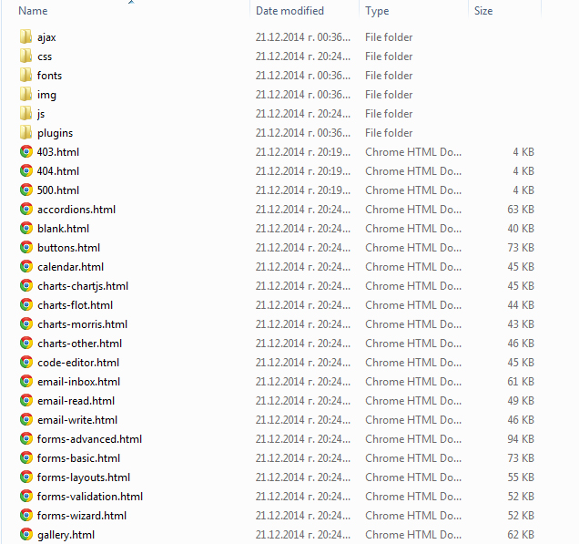

Get started
Basic information and how to start with template
Basic information and how to start with template
First i want to say thank you for purchase this template.
I have huge experience, develop this template with love and pay attention to every single detail, including testing and etc, still if you spot some kind of bugs or want improvments to specific elements or just need new feature don`t hessitate to contact us
We love all customers so every one get free updates.
This is ongoing project so will add features and will fix bugs, also we make this like a framework so don`t hessitate to propouse features or submit bugs.
We provide free suport via email system, you need to email at support@suggeelson.com
All other methods like comments, tweets and etc. will be redirected to email support only, support respond is very fast but some time may be 48 hours delay ( if fall in weekends or national celebrations days). Please be kind and wait to our respond.
After you unzip package you'll find the following directories and files, logically grouping common resources and providing both compiled and minified variations.
Full feature list for Dynamic template
This is whole general page markup without inside elements
<html>
<body>
<!-- Start #header -->
<div id="header">
</div>
<!-- End #header -->
<!-- Start #wrapper -->
<div id="wrapper">
<!-- Start #left-sidebar -->
<div id="left-sidebar">
</div>
<!-- Start #right-sidebar -->
<div id="right-sidebar">
</div>
<!-- Start .page-content -->
<div class="page-content">
</div>
</div>
<!-- End #wrapper -->
<!-- Start #footer -->
<div id="footer">
</div>
<!-- End #footer -->
</body>
</html>Lets see the header markup, i will not paste the whole section just the containers for detailed example just open any page and find header
Header contain two block one is navbar witch hold logo, dropdown menus etc. and header area with usefull links.
Be sure to provide a small version of your logo like example down.
<!-- .page-navbar -->
<div id="header" class="page-navbar">
<!-- .navbar-brand -->
<a href="index.html" class="navbar-brand">
<img src="img/logo.png" class="logo hidden-xs" alt="Dynamic logo">
<img src="img/logosm.png" class="logo-sm hidden-lg hidden-md" alt="Dynamic logo">
</a>
<!-- / navbar-brand -->
<!-- .no-collapse -->
<div id="navbar-no-collapse" class="navbar-no-collapse">
</div>
</div>Creating left sidebar
Left sidebar contain a most valued navigation for template, also have space for some widgets and panels
<!-- .page-sidebar -->
<aside id="sidebar" class="page-sidebar">
<!-- Start .sidebar-inner -->
<div class="sidebar-inner">
<!-- Start .sidebar-scrollarea -->
<div class="sidebar-scrollarea">
Navigation inside
</div>
</div>
</aside>side-nav is created by standart bootstrap markup easy to modify and reproduce via loops in any server side lang or other apps.
Here is the short example:
<!-- .side-nav -->
<div class="side-nav">
<ul class="nav">
<li><a href="index.html"><i class="l-basic-laptop"></i><span class="txt">Dashboard</span></a></li>
<li>
<a href="#"><i class="l-ecommerce-graph1"></i> <span class="txt">Charts</span></a>
<ul class="sub">
<li><a href="charts-flot.html"><span class="txt">Flot charts</span></a></li>
<li><a href="charts-morris.html"><span class="txt">Morris charts</span></a></li>
<li><a href="charts-chartjs.html"><span class="txt">Chartjs </span></a></li>
<li><a href="charts-other.html"><span class="txt">Other charts</span></a></li>
</ul>
</li>
</ul>
</div>
<!-- / side-nav -->If you want to insert some widgets into sidebar area use this example
<!-- .sidebar-panel -->
<div class="sidebar-panel">
<h5 class="sidebar-panel-title">Panel title</h5>
<div class="sidebar-panel-content">
Your info or stats
</div>
</div>Right sidebar markup is almost identical with the left sidebar
By defauth right sidebar is show only in big screens and hided in small to preserve more space, in most cases is used for chat windows, some notifications and etc.
<!-- Start #right-sidebar -->
<aside id="right-sidebar" class="right-sidebar">
<!-- Start .sidebar-inner -->
<div class="sidebar-inner">
<!-- Start .sidebar-scrollarea -->
<div class="sidebar-scrollarea">
Your content here
</div>
</div>
</aside>Content is the place where you put all pages, this will be the place witch you modified most times for every single page
<!-- .page-content -->
<div class="page-content sidebar-page right-sidebar-page clearfix">
<!-- .page-content-wrapper -->
<div class="page-content-wrapper">
<div class="page-content-inner"><!-- .page-content-inner -->
Here we add pages
</div>
</div>
<!-- / page-content-wrapper -->
</div>
<!-- / page-content -->Template come with more that 1000 icons, all icons are located in fonts/ directory.
Demo with icons you can see in icons.html file
Do not use all icons, theese icons are only for demo propouse i suggest to pick 100-200 icons and generate your own font in this wonderfull app Icomoon app
This will decrese loading time and improve your app in production servers, if you have hard time to do this just drop email to help you out
Just add i tag and specify a desired icon tag. This code will show a home icon
<i class="fa fa-home"> fa fa-home</i>If you need to control size just add a size class ( see CSS section for detailed explain of how to use helpers). This code will show a 24px size icon
<i class="fa fa-home s24"> fa fa-home</i><i class="fa fa-home s24 color-green"> fa fa-home</i>Be sure to add additional classes like fa and glyphicon for theese two type of icons. In icons.html page when you do copy and paste icon class will not show the icon until you add this pre class
Checkout the icons.html page to see all icons